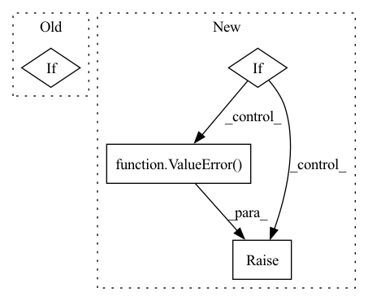

Pattern ID :2088
Before Change
def forward(self, x):
mean, var = self.running_mean, self.running_var
weight, bias = self.weight, self.bias
if x.dim() == 4:
mean, var = mean[:, None, None], var[:, None, None]
weight, bias = weight[:, None, None], bias[:, None, None]
return (x - mean) * torch.rsqrt(var + self.eps) * weight + bias
After Change
self.register_buffer("num_batches_tracked", torch.tensor(0, dtype=torch.long)) // Prevent load errors
def forward(self, x):
if x.dim() != 4:
raise ValueError( "expected 4D input (got %dD input)" % x.dim())
mean, var = self.running_mean, self.running_var
weight, bias = self.weight, self.bias
mean, var = mean[:, None, None], var[:, None, None]In pattern: SUPERPATTERN
Frequency: 3
Non-data size: 4
Instances Fragment ID: 7520512
Project Name: jintao-huang/efficientdet_pytorch
Commit Name: f904ad7387726ecd2dac2c099e3f55a9d1a166ef
Time: 2020-06-09
Author: hjt_study@qq.com
File Name: models/utils.py
M Class Name: FrozenBatchNorm2d
N Class Name: FrozenBatchNorm2d
M Method Name: forward(2)
N Method Name: forward(2)
M Parent Class: nn.Module
N Parent Class: nn.Module
M File Name: models/utils.py
N File Name: models/utils.py
M Start Line: 73
M End Line: 76
N Start Line: 71
N End Line: 73
Before Change
"If use_lma is specified, q_chunk_size and kv_chunk_size must "
"be provided"
)
if (use_memory_efficient_kernel and use_lma):
raise ValueError(
"Choose one of use_memory_efficient_kernel and use_lma"
)
After Change
)
attn_options = [use_memory_efficient_kernel, use_lma, use_flash]
if (sum(attn_options) > 1):
raise ValueError(
"Choose at most one alternative attention algorithm"
)
if(biases is None):
biases = []
Fragment ID: 7520510
Project Name: aqlaboratory/openfold
Commit Name: 4f53624d92b28c56c5479c20f262f63b4eaeec68
Time: 2022-07-08
Author: gahdritz@gmail.com
File Name: openfold/model/primitives.py
M Class Name: Attention
N Class Name: Attention
M Method Name: forward(10)
N Method Name: forward(8)
M Parent Class: nn.Module
N Parent Class: nn.Module
M File Name: openfold/model/primitives.py
N File Name: openfold/model/primitives.py
M Start Line: 439
M End Line: 469
N Start Line: 415
N End Line: 486
Before Change
def forward(self, x):
mean, var = self.running_mean, self.running_var
weight, bias = self.weight, self.bias
if x.dim() == 4:
mean, var = mean[:, None, None], var[:, None, None]
weight, bias = weight[:, None, None], bias[:, None, None]
return (x - mean) * torch.rsqrt(var + self.eps) * weight + bias
After Change
self.register_buffer("num_batches_tracked", torch.tensor(0, dtype=torch.long)) // Prevent load errors
def forward(self, x):
if x.dim() != 4:
raise ValueError( "expected 4D input (got %dD input)" % x.dim())
mean, var = self.running_mean, self.running_var
weight, bias = self.weight, self.bias
mean, var = mean[:, None, None], var[:, None, None] Fragment ID: 7520511
Project Name: jintao-huang/efficientdet_pytorch
Commit Name: 1bc8344a81cb3569922e4a181f552806b0b82dc8
Time: 2020-06-09
Author: hjt_study@qq.com
File Name: utils/detection/utils.py
M Class Name: FrozenBatchNorm2d
N Class Name: FrozenBatchNorm2d
M Method Name: forward(2)
N Method Name: forward(2)
M Parent Class: nn.Module
N Parent Class: nn.Module
M File Name: utils/detection/utils.py
N File Name: utils/detection/utils.py
M Start Line: 114
M End Line: 117
N Start Line: 112
N End Line: 114